販売管理 SD（Sales and Distribution）
販売管理 · 販売エリア · 価格設定 · パートナ · 販売プロセス · 請求
1. 本モジュールのガイド
SD のメインラインは「販売組織構造 → 出荷の基本データ → 価格設定と税 → 勘定と更新グループ → マスタデータ → 販売プロセス」です：販売組織 / 流通チャネル / 製品部門とその割当 → 販売エリア、販売事務所、販売グループ → 出荷（出発ポイント、積込ポイント、輸送条件、積載グループ、ピッキング用保管場所）→ 得意先勘定グループの販売データとパートナ決定 → 価格決定手順、得意先と伝票の価格決定手順、価格決定手順の決定 → 部品表（BOM）と排除、販売伝票の品目決定 → 税決定ルール、得意先と品目の税分類、売上税税率（VK11）→ 品目の勘定割当グループと売上高勘定 → ヘッダ／明細レベルの更新グループ → マスタデータ（品目の販売ビュー MM01、販売価格、受注先 VD01、納入先と割当 VD02）→ 販売プロセス（見積 VA21 → 受注伝票 → 出荷伝票（外向納入）VL01N → 請求書 VF01 / 転記 VF02 → 元伝票 → 伝票一覧 VA05 → 販売分析 MCTA）。
教材のシナリオは、「遠東造船所」が「頤寧公司」の見積に基づいて受注伝票を登録し、その後、納入、請求、財務会計への転記まで一連の流れをたどるものです。
- 販売エリア（販売組織 + 流通チャネル + 製品部門）は SD で最も基本となる「業務区分」です
- 価格決定手順（条件タイプ、手順の決定）と税決定ルール（得意先税分類 + 品目税分類）
- パートナ決定（受注先 / 請求先 / 支払先 / 納入先）と得意先勘定グループの機能割当
- 販売プロセス：見積
VA21→ 受注 → 納入VL01N→ 請求書VF01/VF02→ 会計伝票
ドキュメントに出てくる T-code：RVAA01 MM01 VK11 VD01 VD02 VA21 VL01N VF01 VF02 VA05 MCTA FS00 MIRO CK11N CK24 OBYC（詳細は T-code / IMG パス早見表 を参照）
2. タスク目次（48 件）
そのうち 46 件のタスクで、原教材ドキュメントの IMG 設定メニューパスが示されています；IMG 設定 のマークが付いているのはカスタマイジング（設定）タスク、業務処理 と付いているのは日常業務の操作タスクです。表示がないタスクは原文でも明示されておらず、タスク名からご自身で判断してください（一般に「～の定義／～パラメータのメンテナンス」＝ IMG 設定、「伝票・指図・請求書の登録／入力／照会」＝業務処理）。
3. 手順（タスクごと）
販売組織を定義
IMG設定（カスタマイズ）6 画面 / 4 ステップ原語（中国語）
企业结构 → 定义 → 销售和分销 → 定义、复制、删除、检查销售组织-
前の画面に続けて操作します（画面 1067）

画面 1067image1078.png · 389×313 
画面 1068image1079.png · 627×191 -
「販売組織の定義」をダブルクリック
原文
双击“定义销售组织”
画面 1069image1080.png · 231×544 -
前の画面に続けて操作します（画面 1070）
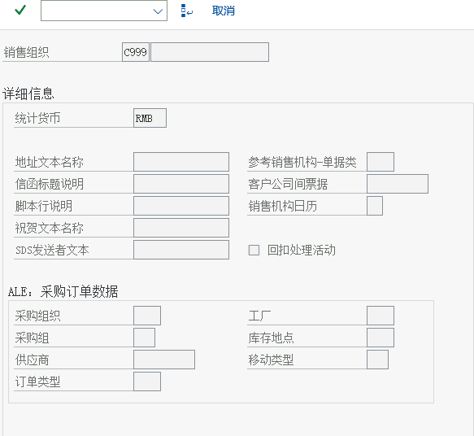
画面 1070image1081.png · 583×536 -
「保存」をクリック
原文
点击保存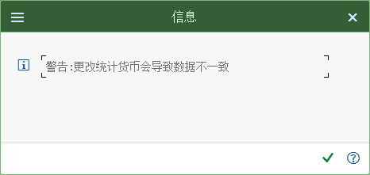
画面 1071image1082.png · 466×221 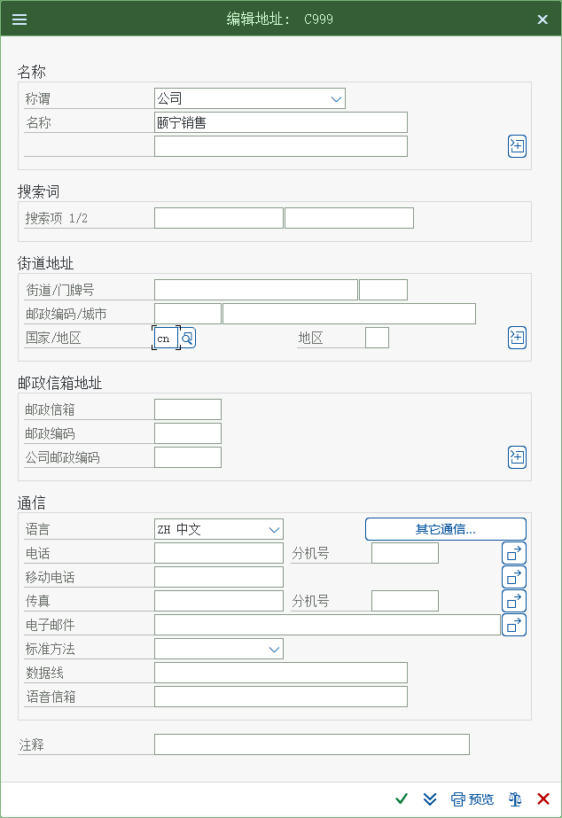
画面 1072image1083.png · 634×923 教材ノートEnter を押す
流通チャネルを定義
IMG設定（カスタマイズ）4 画面 / 4 ステップ原語（中国語）
企业结构 → 定义 → 销售和分销 → 定义、复制、删除、检查分销渠道-
エンタープライズ構造－定義－販売管理（SD）－流通チャネルの定義・コピー・削除・チェック
原文
企业结构－定义－销售和分销－定义、复制、删除、检查分销渠道
画面 1073image1084.png · 423×224 -
前の画面に続けて操作します（画面 1074）

画面 1074image1085.png · 641×214 -
「流通チャネルの定義」をクリック
原文
点击定义分销渠道
画面 1075image1086.png · 380×278 -
「新規エントリ」をクリック
原文
点击“新条目”
画面 1076image1087.png · 347×193
製品部門を定義
IMG設定（カスタマイズ）4 画面 / 3 ステップ原語（中国語）
企业结构 → 定义 → 后勤常规 → 定义、复制、删除、检查产品组-
エンタープライズ構造－定義－ロジスティクス一般－製品部門の定義・コピー・削除・チェック
原文
企业结构－定义－后勤常规－定义、复制、删除、检查产品组
画面 1077image1088.png · 348×249 
画面 1078image1089.png · 615×220 -
「製品部門の定義」をクリック
原文
点击“定义产品组”
画面 1079image1090.png · 351×131 教材ノートZ1 鋳鋼ポンプ -
「新規エントリ」をクリックし、さらに「新規エントリ」をクリックします
Z2 増圧ポンプ原文
点击“新条目”点击“新条目”
Z2 增压泵
画面 1080image1091.png · 343×151
販売組織を会社コードに配賦
IMG設定（カスタマイズ）3 画面 / 3 ステップ原語（中国語）
企业结构 → 分配 → 销售和分销 → 给公司代码分配销售组织-
解説： SAP では 1 つの販売組織は 1 つの会社コードにしか配賦できませんが、1 つの会社コードは複数の販売組織を持つことができます。ただし、販売組織を 1 つの会社コードに配賦することは、その販売組織の売上高が財務上この会社コードに属することを意味するだけです。グループ企業の場合、販売組織は他の会社コードの製品を販売することもでき、これが会社間販売を構成します。
原文
解释：在 SAP 中一个销售组织只可以分配给一个公司代码，但是一个公司代码可以有多个销售组织。但是销售组织分配给一个公司代码，只是意味着这个销售组织的销售收入和在财务上是属于这个公司代码的。如果是集团公司，销售组织仍然可以销售其他公司代码的产品，这样就构成了跨公司销售。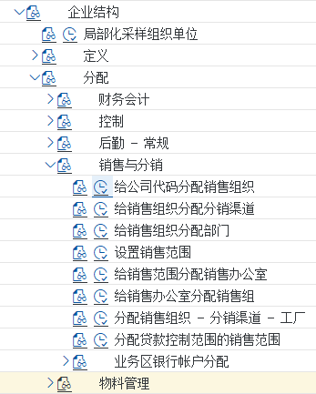
画面 1081image1092.png · 347×433 -
前の画面に続けて操作します（画面 1082）
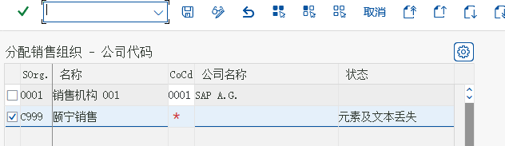
画面 1082image1093.png · 632×183 -
会社コード CoCd に C999 を直接入力します
原文
直接录入公司代码CoCd为C999
画面 1083image1094.png · 637×192
流通チャネルを販売組織に配賦
IMG設定（カスタマイズ）6 画面 / 2 ステップ原語（中国語）
企业结构 → 分配 → 销售和分销 → 给销售组织分配分销渠道-
解説： 「直販」と「卸売」の 2 つの流通チャネルを「頤寧販売組織」に割り当てます。この割当は「頤寧販売組織」が「直販」と「卸売」の 2 つのチャネルによる販売を行えることを意味し、他の販売組織もこれら 2 つのチャネルによる販売を行う可能性があるため、この割当は多対多の関係になります。
原文
解释：我们将“直销”和“批发”两个分销渠道分配给“颐宁销售组织”，这个分配意味着 “颐宁销售组织”可以从事“直销”和“批发”两种渠道的销售，其他的销售组织也可能从事这两种渠道的销售，所以分配是多对多的关系
画面 1084image1097.png · 392×438 
画面 1085image1098.png · 605×169 画面 1084image1097.png · 392×438 画面 1085image1098.png · 605×169 教材ノート「新規エントリ」をクリック -
前の画面に続けて操作します（画面 1088）

画面 1088image1099.png · 631×192 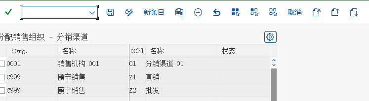
画面 1089image1100.png · 747×205
製品部門を販売組織に配賦
3 画面 / 3 ステップ原語（中国語）
企业结构 → 分配 → 销售和分销 → 给销售组织分配部门-
解説： 本ステップでは「鋳鋼ポンプ」と「増圧ポンプ」を「頤寧販売組織」に割り当てます。これは「頤寧販売組織」が「鋳鋼ポンプ」と「増圧ポンプ」の販売を行えることを意味します。他の販売組織もこれら 2 つの製品部門の販売を行う可能性があるため、この割当も多対多です。
原文
解释：本步中将“铸钢泵”和“增压泵”分配给“颐宁销售组织”。这意味着“颐宁销售组织”可以从事“铸钢泵”和“增压泵”的销售。其他销售组织也可能从事这两个产品组的销售，所以这个分配也是多对多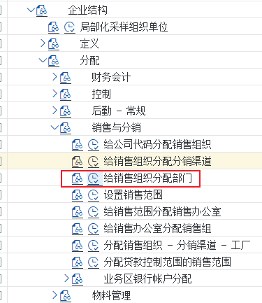
画面 1090image1101.png · 375×433 -
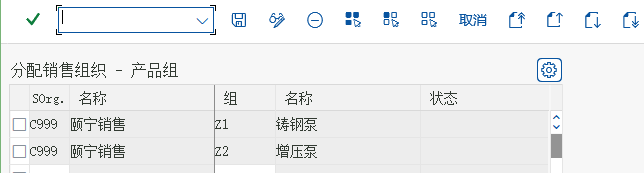
画面 1091image1102.png · 644×173 -
前の画面に続けて操作します（画面 1092）

画面 1092image1103.png · 558×159
販売エリアを設定
IMG設定（カスタマイズ）4 画面 / 2 ステップ原語（中国語）
企业结构 → 分配 → 销售和分销 → 设置销售范围-
解説： SAP では、販売組織、流通チャネル、製品部門の組み合わせを「販売エリア」と呼びます。その業務上の意味は、ある販売組織が特定の流通チャネルを通じて特定の製品部門を扱うことです。頤寧販売組織では、直販と卸売の 2 つの製品部門による販売を配賦でき、全部で 4 つの販売エリアがあり、それぞれ設定します。販売エリアは販売部門とも呼ばれます。
原文
解释：SAP 把销售组织、分销渠道和产品组的组合称为“销售范围”，它的业务含义是某个销售组织通过某种分销渠道经营某个产品组。在颐宁销售组织中，我们可以分配通过直销 和批发经营两种产品组的销售，一共有四个销售范围，我们分别设置，销售范围也叫销售部门
画面 1093image1105.png · 375×416 教材ノート「新規エントリ」をクリック -
前の画面に続けて操作します（画面 1094）

画面 1094image1106.png · 775×283 
画面 1095image1107.png · 779×250 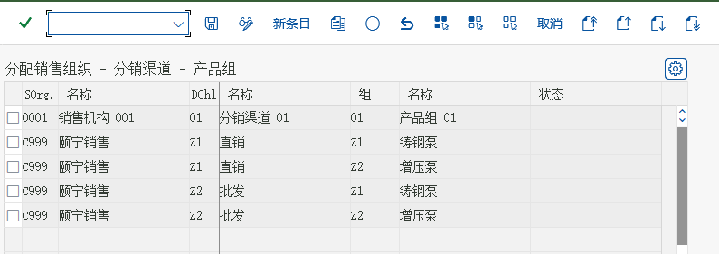
画面 1096image1108.png · 795×281
販売事務所を定義
IMG設定（カスタマイズ）5 画面 / 4 ステップ原語（中国語）
企业结构 → 定义 → 销售和分销 → 维护销售办公室-
エンタープライズ構造－定義－販売管理（SD）－販売事務所のメンテナンス
原文
企业结构－定义－销售和分销－维护销售办公室
画面 1097image1109.png · 363×364 -

画面 1098image1110.png · 619×723 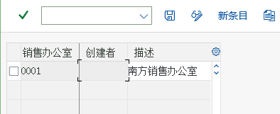
画面 1099image1111.png · 394×161 -
Z001 頤寧北方販売会社
原文
Z001 颐宁北方销售公司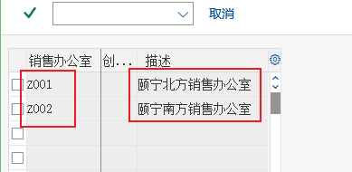
画面 1100image1112.png · 389×190 -

画面 1101image1113.png · 627×727
販売グループを定義
IMG設定（カスタマイズ）5 画面 / 2 ステップ原語（中国語）
企业结构 → 定义 → 销售和分销 → 维护销售组-
SD では「販売グループ」を定義して統計と分析を行うこともできます。頤寧公司では、東北、西北、東南、西南の 4 つの販売グループを定義します。それらはそれぞれ北方と南方の販売事務所に所属します。販売グループと販売事務所は SD では任意の組織構造であり、必須ではありません。
エンタープライズ構造－定義－販売管理（SD）－販売グループのメンテナンス原文
在 SD 中我们还可以定义“销售组”来统计和分析。在颐宁公司，我们定义东北、西北、东南、西南四个销售组。他们分别隶属于北方和南方销售办公室。销售组和销售办公室在 SD都是可选的组织结构，不是必选的
企业结构－定义－销售和分销－维护销售组
画面 1102image1116.png · 376×272 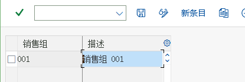
画面 1103image1117.png · 415×139 画面 1102image1116.png · 376×272 画面 1103image1117.png · 415×139 教材ノートZ01 東北販売グループ Z02 西北販売グループ Z03 東南販売グループ Z04 西南販売グループ -
前の画面に続けて操作します（画面 1106）
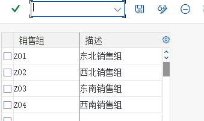
画面 1106image1118.png · 339×201
販売エリアに販売事務所を配賦
IMG設定（カスタマイズ）5 画面 / 3 ステップ原語（中国語）
企业结构 → 分配 → 销售和分销 → 给销售范围分配销售办公室-
頤寧公司の北方と南方の 2 つの販売事務所はいずれも鋳鋼ポンプと増圧ポンプの卸売と直販を行えるため、この 2 つの販売事務所を 4 つの販売エリアに割り当てます
原文
颐宁公司的北方和南方两个销售办公室都可以从事铸钢泵和增压泵的批发和直销，所以我们将这两个销售办公室分配给这四个销售范围
画面 1107image1119.png · 350×343 -
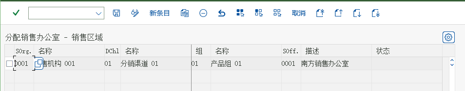
画面 1108image1120.png · 954×188 -
前の画面に続けて操作します（画面 1109）

画面 1109image1121.png · 953×326 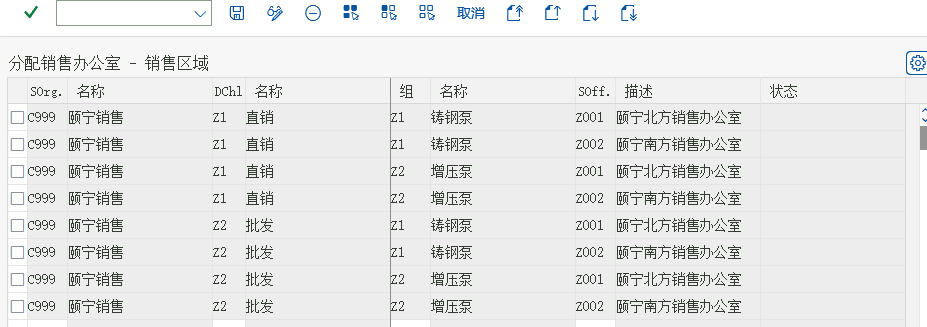
画面 1110image1122.png · 927×327 
画面 1111image1123.png · 947×375
単純な順列組み合わせで、全部で 8 通りです
0 画面 / 0 ステップ原語（中国語）
販売グループを販売事務所に配賦
IMG設定（カスタマイズ）4 画面 / 1 ステップ原語（中国語）
企业结构 → 分配 → 销售和分销 → 给销售办公室分配销售组-
前の画面に続けて操作します（画面 1112）
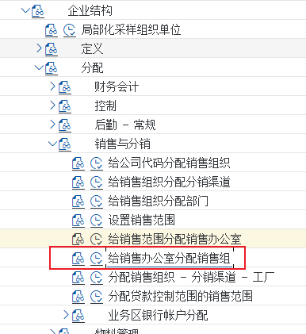
画面 1112image1124.png · 386×421 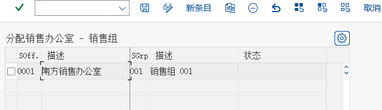
画面 1113image1125.png · 628×181 
画面 1114image1126.png · 646×251 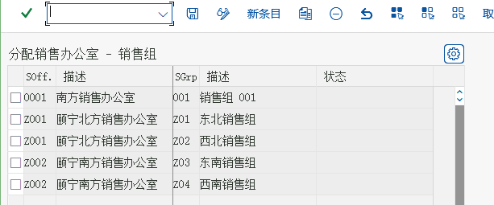
画面 1115image1127.png · 613×255
プラントを販売組織/流通チャネルに配賦します
IMG設定（カスタマイズ）5 画面 / 3 ステップ原語（中国語）
企业结构 → 分配 → 销售和分销 → 分配销售组织-分销渠道-工厂-
エンタープライズ構造－割当－販売管理（SD）－販売組織-流通チャネル-プラントの割当
原文
企业结构－分配－销售和分销－分配销售组织-分销渠道-工厂
画面 1116image1128.png · 400×409 -

画面 1117image1129.png · 757×199 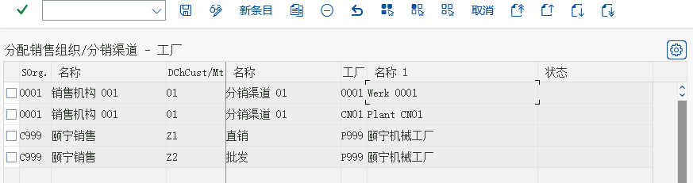
画面 1118image1130.png · 873×231 
画面 1119image1131.png · 869×198 -
前の画面に続けて操作します（画面 1120）
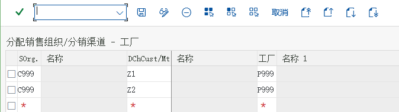
画面 1120image1132.png · 674×190
出発ポイントを定義
IMG設定（カスタマイズ）6 画面 / 5 ステップ原語（中国語）
企业结构 → 定义 → 后勤执行 → 定义、复制、删除、检查起运点-

画面 1121image1133.png · 437×156 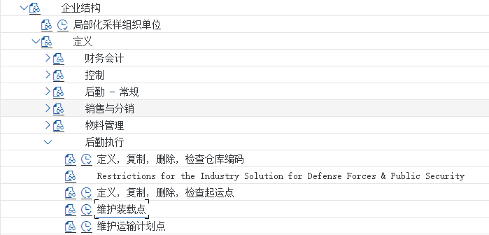
画面 1122image1134.png · 699×336 -
エンタープライズ構造－定義－ロジスティクス実行（LE）－出発ポイントの定義・コピー・削除・チェック
原文
企业结构－定义－后勤执行－定义、复制、删除、检查起运点
画面 1123image1135.png · 631×184 -
Z999 頤寧出荷ポイント
原文
Z999 颐宁装运点
画面 1124image1136.png · 604×746 -
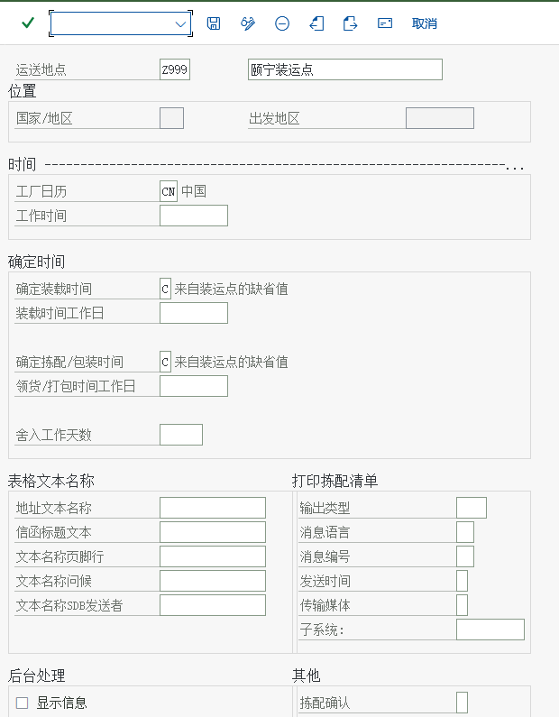
画面 1125image1137.png · 620×795 -
前の画面に続けて操作します（画面 1126）

画面 1126image1138.png · 619×539
積込ポイントを定義
IMG設定（カスタマイズ）7 画面 / 3 ステップ原語（中国語）
企业结构 → 定义 → 后勤执行 → 维护装载点-
解説： 出発ポイントの下はさらに積込ポイントに細分して、具体的な積込場所を示すことができます。たとえば、トラックの出発ポイント 1 つの中を倉庫のゲートごとに 3 つの積込ポイントに分けることもできます。本ステップでは積込ポイントを定義します。出荷伝票には積込ポイントを記載できます。積込ポイントは SD では任意の組織構造です。積込ポイントを定義しなくても SD は使用できます。
エンタープライズ構造－定義－ロジスティクス実行（LE）－積込ポイントのメンテナンス原文
解释：起运点之下可以再细分装载点，来指明确定的装载地点，如一个卡车起运点中可能按仓库的大门分成三个装载点等等。本步骤我们将定义装载点。发货单中可以注明装载点。单装载点是 SD 中可选的组织结构。没有装载点的定义. SD 也能使用。
企业结构－定义－后勤执行－维护装载点
画面 1127image1141.png · 656×337 
画面 1128image1142.png · 403×248 画面 1127image1141.png · 656×337 画面 1128image1142.png · 403×248 -
作業範囲を入力
原文
输入工作范围
画面 1131image1143.png · 403×248 
画面 1132image1144.png · 463×236 -
「新規エントリ」をクリックし、新しい積込ポイントを入力
原文
点击新条目，输入新的装载点
画面 1133image1145.png · 461×249
出発ポイントをプラントに配賦
IMG設定（カスタマイズ）4 画面 / 4 ステップ原語（中国語）
企业结构 → 分配 → 后勤执行 → 给工厂分配起运点-
解説： 1 つのプラントには出発ポイントを複数設定でき、例えば陸路、水路などがあります。1 つの出発ポイントを複数のプラントで共用することもできるため、両者は多対多の関係です。
原文
解释：一个工厂可以有几个起运点，如公路、水路等。一个起运点也可以是几个工厂公用的，所以两者是多对多的关系。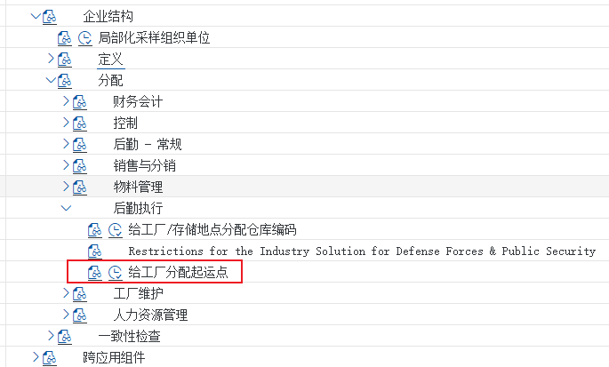
画面 1134image1146.png · 685×413 -
前の画面に続けて操作します（画面 1135）

画面 1135image1147.png · 380×313 -
「配賦」をクリック
原文
点击分配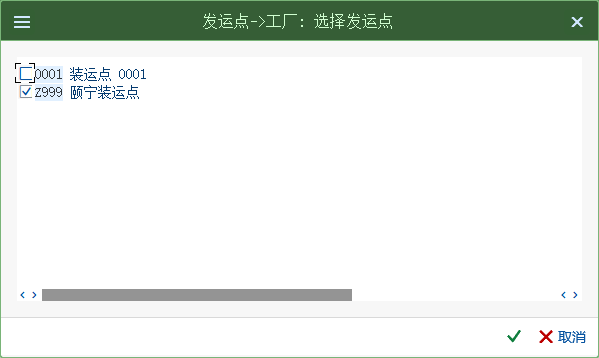
画面 1136image1148.png · 599×358 -
前の画面に続けて操作します（画面 1137）

画面 1137image1149.png · 375×141
輸送条件を定義
IMG設定（カスタマイズ）3 画面 / 2 ステップ原語（中国語）
后勤执行 → 装运 → 基本发运功能 → 装运点和收货点确认 → 定义运送条件-
ロジスティクス実行（LE）－出荷－出荷の基本機能－出荷ポイントと入庫ポイントの決定－輸送条件の定義
原文
后勤执行－装运－基本发运功能－装运点和收货点确认－定义运送条件
画面 1138image1150.png · 706×407 -
前の画面に続けて操作します（画面 1139）

画面 1139image1151.png · 261×233 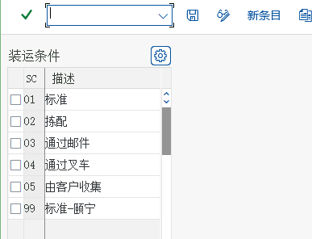
画面 1140image1152.png · 387×296
積載グループを定義
3 画面 / 3 ステップ原語（中国語）
后勤执行 → 装运 → 基本发运功能 → 装运点和收货点确认 → 定义装载组-
ロジスティクス実行（LE）－出荷－出荷の基本機能－出荷ポイントと入庫ポイントの決定－積載グループの定義
原文
后勤执行－装运－基本发运功能－装运点和收货点确认－定义装载组
画面 1141image1153.png · 696×349 -
前の画面に続けて操作します（画面 1142）
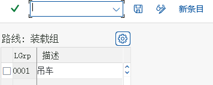
画面 1142image1154.png · 356×143 -
Z999 フォークリフト-頤寧
原文
Z999 叉车-颐宁
画面 1143image1155.png · 284×143
出発ポイントを配賦
IMG設定（カスタマイズ）3 画面 / 2 ステップ原語（中国語）
后勤执行 → 装运 → 装运点和收货点确认 → 分配运送地点-
前の画面に続けて操作します（画面 1144）

画面 1144image1156.png · 627×342 
画面 1145image1157.png · 614×172 -
「新規エントリ」をクリック
99 Z999 P999 Z999原文
点击新条目
99 Z999 P999 Z999
画面 1146image1158.png · 637×186
ピッキング保管場所を配賦
IMG設定（カスタマイズ）3 画面 / 3 ステップ原語（中国語）
后勤执行 → 装运 → 拣配 → 确定拣配地点 → 分配拣配地点-
解説： 受注伝票の処理では、SAP システムは出発ポイントを自動的に設定できるほか、品目をどの保管場所からピッキングするかも自動的に設定できます。本設定では、出発ポイント、プラント、保管条件（品目マスタの 1 つのパラメータ）によって、販売拠点でピッキングする保管場所を決定できます。本稿では出発ポイントとプラントの 2 つの条件のみを選択します。
原文
解释：在处理销售订单的过程中，SAP 系统除了可以自动建立起运点之外，还可以自动建立货物从哪个库存地点拣配。本配置可以根据起运点、工厂和存储条件（物料主数据的一个 参数）确定销售地点拣配的库存地点。本文中我们只需要选用起运点和工厂两个条件。
画面 1147image1159.png · 305×529 -
前の画面に続けて操作します（画面 1148）
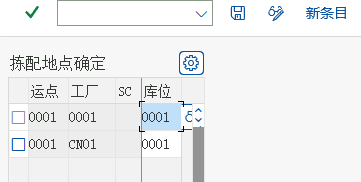
画面 1148image1160.png · 361×182 -
解説： 最初の 3 つのグレーの項目が、決定的な役割を果たす出発ポイント、プラント、保管条件です。
原文
解释：前三个灰色字段是起决定作用的起运点、工厂和存储条件。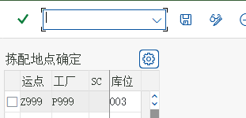
画面 1149image1161.png · 311×150
得意先勘定グループの販売データをメンテナンス
IMG設定（カスタマイズ）16 画面 / 10 ステップ原語（中国語）
财务会计(新) → 应收账款和应付账款 → 客户账户 → 主数据 → 创建客户主记录准备 → 定义带有屏幕格式的账户组（客户）| 項目（日本語） | 画面の中国語 | 教材の設定値 |
|---|---|---|
| ダブルクリック | 双击 | K002 |
-
解説： 本ステップでは、得意先勘定グループごとに、得意先の販売ビューでどのパラメータが必須入力、入力不可、任意入力であるかをメンテナンスします。
財務会計（新）－売掛金・買掛金－得意先勘定－マスタデータ－得意先マスタ登録準備－画面フォーマット付きの勘定グループの定義（得意先）原文
解释：在本步骤中，我们将根据不停的客户账户组维护客户销售视图中哪些参数是必须输入的，哪些是不能输入的，哪些是可选输入的。
财务会计(新)－应收账款和应付账款－客户账户－主数据－创建客户主记录准备－定义带有屏幕格式的账户组（客户）
画面 1150image1162.png · 413×721 -
前の画面に続けて操作します（画面 1151）
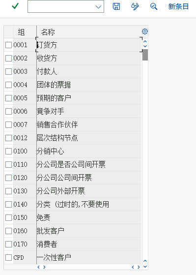
画面 1151image1165.png · 399×559 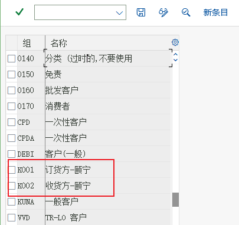
画面 1152image1166.png · 405×382 画面 1151image1165.png · 399×559 画面 1152image1166.png · 405×382 -
得意先勘定グループを 2 つ登録しました。ここではこの 2 つの得意先勘定グループを変更します。K001 をダブルクリックします
原文
我们已经创建了两个客户账户组，在这里我们需要修改这两个客户账户组。双击 K001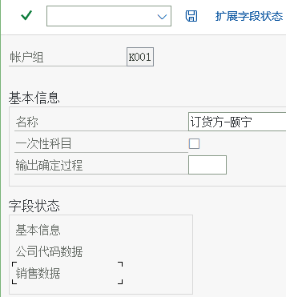
画面 1155image1169.png · 357×371 
画面 1156image1170.png · 255×364 画面 1155image1169.png · 357×371 画面 1156image1170.png · 255×364 教材ノート「販売」をダブルクリックして、次の設定に進みます -
前の画面に続けて操作します（画面 1159）

画面 1159image1171.png · 589×822 -
戻って「出庫」をクリック
原文
返回，点击“发货”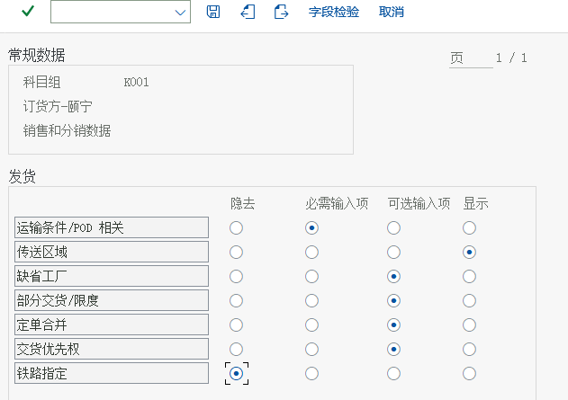
画面 1160image1172.png · 631×445 -
戻って「請求」をクリック
原文
返回点击“计费”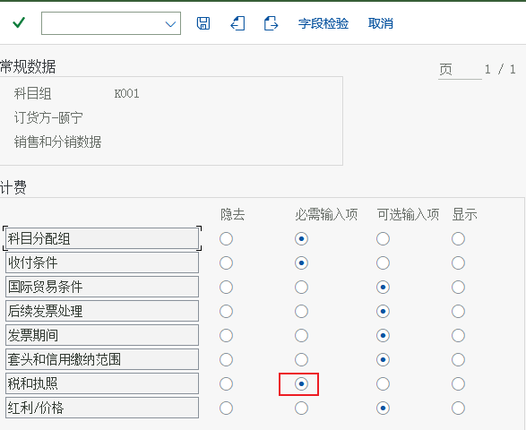
画面 1161image1173.png · 587×480 -
前の画面に続けて操作します（画面 1162）
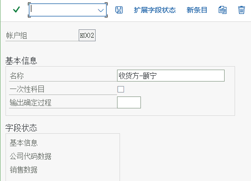
画面 1162image1174.png · 504×364 -
「販売データ」に進み、「販売」をダブルクリックします
次のとおり設定原文
进入“销售数据”双击“销售”
设置如下
画面 1163image1175.png · 583×832 -
前の画面に続けて操作します（画面 1164）
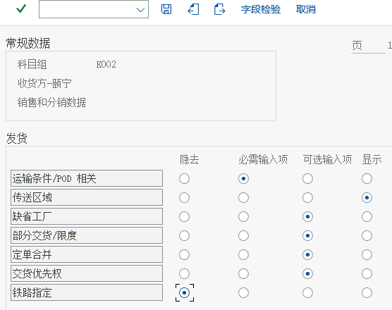
画面 1164image1176.png · 556×440 -
戻って「請求」をダブルクリック
原文
返回，双击“计费”
画面 1165image1177.png · 593×466
価格決定手順を定義
IMG設定（カスタマイズ）RVAA014 画面 / 4 ステップ原語（中国語）
销售和分销 → 基本功能 → 定价 → 定价控制 → 定义并分配定价过程-
販売管理（SD）－基本機能－価格設定－価格設定管理－価格決定手順の定義と割当
原文
销售和分销－基本功能－定价－定价控制－定义并分配定价过程
画面 1166image1178.png · 324×487 -
ポップアップ
原文
弹出
画面 1167image1179.png · 630×378 教材ノート「価格決定手順のメンテナンス」をクリック -
前の画面に続けて操作します（画面 1168）
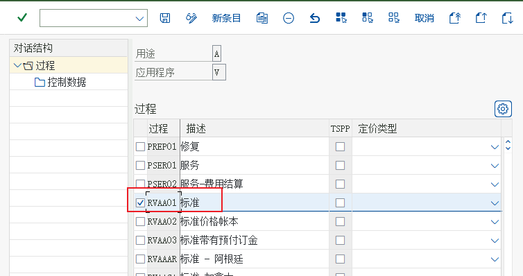
画面 1168image1180.png · 754×398 -
手順「RVAA01」を選択し、左側の「制御データ」をクリックします
原文
选中过程“RVAA01 ”，点击左侧的“控制数据”
画面 1169image1181.png · 988×617 原理の説明解説：「RVAA01 標準」がこれから使用するシステムの事前設定済みの価格決定手順です。画面の「Ctyp」列は、SAP では価格の「条件タイプ」と呼びます。販売原価、割引、リベート、運賃、保険料、手数料、付加価値税などはいずれも条件タイプです。具体的な価格は条件タイプにメンテナンスします。後述の 6.34 品目の販売価格のメンテナンスと 6.35 売上税率のメンテナンスで、販売価格 PR00 と売上税 MWST の 2 つの条件タイプの価格をそれぞれメンテナンスします。また、価格決定手順の各ステップに対応する「勘定キー」（たとえば ERL）が、この条件タイプの記帳する勘定を決定します。これから教材ノート6.29 売上高の総勘定元帳勘定で勘定をメンテナンスします。
得意先と伝票の価格決定手順を定義
3 画面 / 3 ステップダブルクリックして得意先価格決定手順を定義
原語（中国語）
双击定义客户定价过程
销售和分销 → 基本功能 → 定价 → 定价控制 → 定义并分配定价过程-
販売管理（SD）－基本機能－価格設定－価格設定管理－価格決定手順の定義と割当
原文
销售和分销－基本功能－定价－定价控制－定义并分配定价过程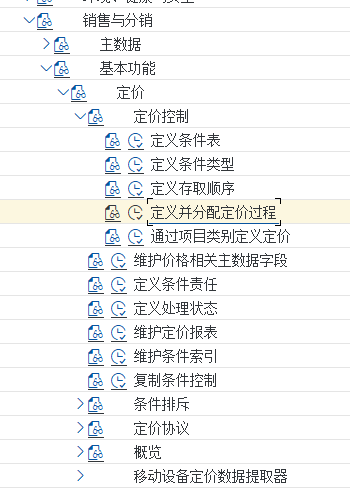
画面 1170image1182.png · 350×488 -
前の画面に続けて操作します（画面 1171）

画面 1171image1183.png · 557×301 -
解説： 頤寧公司は統一の価格決定手順を採用しているため、システム標準の得意先価格決定手順を使用するだけで十分です。この得意先価格決定手順パラメータは、得意先マスタを定義する際に、6.36 の受注先マスタの販売ビューのメンテナンスで割り当てます。
戻る原文
解释：颐宁公司采用统一的定价过程，所以我们只需要使用系统标准的客户定价过程就可以了。这个客户定价过程参数我们将在定义客户主数据时 6.36 维护订货方主数据的销售视 图中分配。
返回
画面 1172image1184.png · 623×196 教材ノートダブルクリックして伝票価格決定手順を定義教材ノートOR 指図を使用します。OR 指図は A 標準を使用するため、新規に登録する必要はありません。
価格決定手順の決定を定義
IMG設定（カスタマイズ）4 画面 / 3 ステップ原語（中国語）
销售和分销 → 基本功能 → 定价 → 定价控制 → 定义并分配定价过程-
販売管理（SD）－基本機能－価格設定－価格設定管理－価格決定手順の定義と割当
原文
销售和分销－基本功能－定价－定价控制－定义并分配定价过程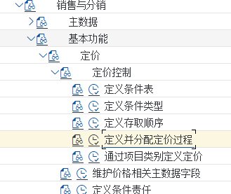
画面 1173image1185.png · 329×277 -
前の画面に続けて操作します（画面 1174）
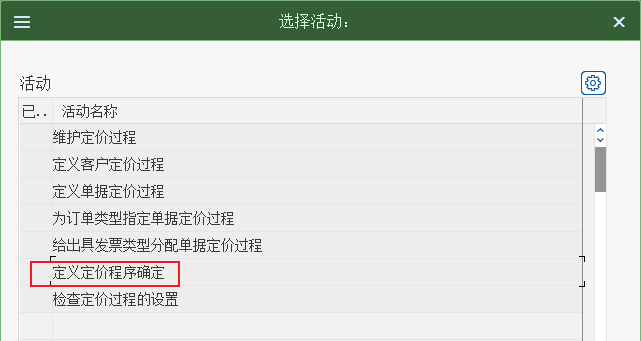
画面 1174image1186.png · 641×341 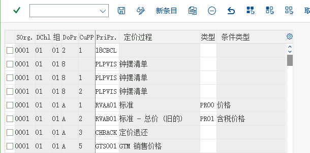
画面 1175image1187.png · 610×302 教材ノートC999Z1Z1A1RVAA01 標準PR00価格C999Z1Z2A1RVAA01 標準PR00価格C999Z2Z1A1RVAA01 標準PR00価格C999Z2Z2A1RVAA01 標準PR00価格C999Z1Z1A1RVAA01 標準PR00価格C999Z1Z2A1RVAA01 標準PR00価格C999Z2Z1A1RVAA01 標準PR00価格C999Z2Z2A1RVAA01 標準PR00価格ダブルクリックして価格決定手順の定義を確定 -
頤寧公司の新しい価格設定確認を定義します。「新規エントリ」をクリックします
原文
我们来定义颐宁公司新的定价确认点击新条目
画面 1176image1188.png · 621×206
販売伝票の一覧と排除を有効化します
IMG設定（カスタマイズ）5 画面 / 4 ステップ原語（中国語）
后勤执行 → 装运 → 基本发运功能 → 列表/排斥-
ロジスティクス実行（LE）－出荷－出荷の基本機能－一覧/排除
原文
后勤执行－装运－基本发运功能－列表/排斥
画面 1177image1189.png · 313×451 
画面 1178image1190.png · 578×285 -
「販売伝票タイプによる一覧/排除の有効化」をダブルクリックします
原文
双击“根据销售单据类型激活清单/排斥”
画面 1179image1191.png · 657×537 -
解説： SAP では、販売価格設定と同様の技術（条件技術と呼びます）を使用して「一覧」と「排除」を定義します。画面の 7 つのステップに従って、柔軟な「一覧」および「排除」ルールを定義できます。本部分では A00001 一覧プロセスと B00001 排除プロセスを採用し、いずれも得意先によってどの品目が販売可能（「一覧」）で、どの品目が販売不可（「排除」）かを単純に決定します。
QT と OR は今回使用するものです。事前定義されている「一覧」と「排除」をこれらに割り当てます。原文
解释：SAP 使用和销售定价类似的技术（称之为条件技术）来定义“清单”和“排斥”。根据屏幕的 7 个步骤，用户可以定义灵活的“ 清单” 和“ 排斥” 规则。在本部分我们采用 A00001清单过程和 B00001 排斥过程，都是简单地按客户来决定哪些物料是可以销售（“ 清单”），哪些物料是不可以销售（“ 排斥”）
QT 和 OR 是本次要用的，我们将预定义的“清单”和“排斥”分配给他们。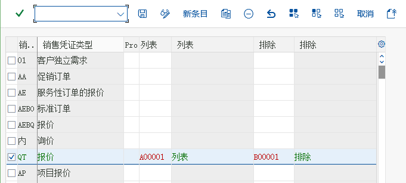
画面 1180image1192.png · 681×307 -
前の画面に続けて操作します（画面 1181）

画面 1181image1193.png · 676×285
販売伝票の品目決定をメンテナンス
IMG設定（カスタマイズ）4 画面 / 3 ステップ原語（中国語）
后勤执行 → 装运 → 基本发运功能 → 物料确定 → 分配过程到销售凭证类型| 項目（日本語） | 画面の中国語 | 教材の設定値 |
|---|---|---|
| メンテナンス | 维护 | QT |
| メンテナンス | 维护 | OR |
-

画面 1182image1194.png · 375×541 -
解説： 場合によっては、受注伝票に入力する商品コードが自社標準の品目マスタコードではなく、たとえば得意先の品目コードや国際物品番号（IAN）などを入力する必要があります。SAP では、これらの特殊なコードを品目マスタとしてメンテナンスする必要はなく、「品目決定」のルールをメンテナンスするだけで、システムがこれらの特殊なコードを品目マスタに自動的に置き換えます。「品目決定」ルールは販売伝票のタイプによって決まります。
ロジスティクス実行（LE）－出荷－出荷の基本機能－品目決定－販売伝票タイプへのプロセスの割当原文
解释：在有些情况下，销售订单需要输入的商品代码不是本公司标准的物料主数据代码，比如需要输入客户的物料代码，或者需要输入国际物品编码（IAN）等。在 SAP 里不需要将这些特殊的代码维护成物料主数据，而只需要维护一个 “ 物料确定” 的规则，让系统将这些特殊代码自动替换成物料主数据。“ 物料确定”规则是由销售单据的类型决定。
后勤执行－装运－基本发运功能－物料确定－分配过程到销售凭证类型
画面 1183image1195.png · 466×563 -
前の画面に続けて操作します（画面 1184）

画面 1184image1196.png · 505×277 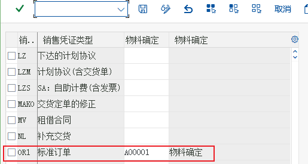
画面 1185image1197.png · 515×275
税決定ルールを定義
IMG設定（カスタマイズ）2 画面 / 1 ステップ原語（中国語）
销售和分销 → 基本功能 → 税收 → 定义税收确定规则-
前の画面に続けて操作します（画面 1186）
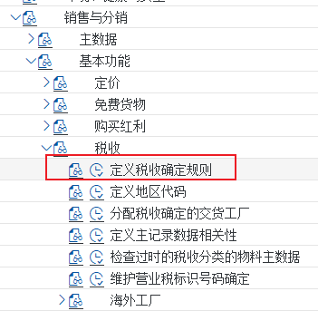
画面 1186image1198.png · 351×343 
画面 1187image1199.png · 488×367 原理の説明解説：SAP 標準システムではすでに MWST が CN に配賦されています
得意先税分類と品目税分類を定義します
IMG設定（カスタマイズ）7 画面 / 4 ステップ原語（中国語）
销售和分销 → 基本功能 → 税收 → 定义主记录数据相关性-
解説： 受注伝票の価格設定の過程で、売上税（条件タイプ MWST）の具体的な税率は得意先と品目の 2 つの要因によって決定されます。得意先は得意先マスタの「税分類」パラメータで、品目は品目マスタの「税分類」パラメータで決定されます。
原文
解释：在销售订单定价的过程中，销项税（条件类型 MWST）的具体税率是由客户和物料两个因素决定的。客户是通过客户主数据中的 “ 税分类” 参数决定的，而物料是通过物料主数据中的“税分类”参数决定的。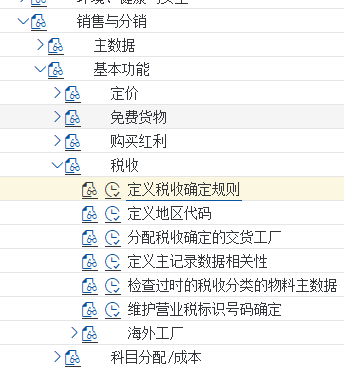
画面 1188image1202.png · 344×367 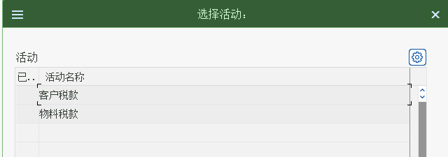
画面 1189image1203.png · 640×225 画面 1188image1202.png · 344×367 画面 1189image1203.png · 640×225 -
「得意先」税をクリック
原文
点击“客户”税款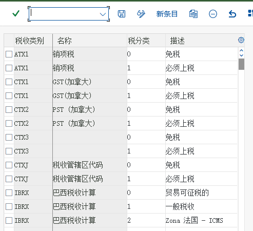
画面 1192image1204.png · 493×450 -
前の画面に続けて操作します（画面 1193）
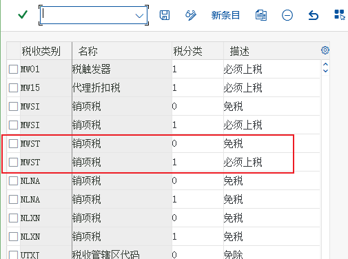
画面 1193image1205.png · 505×376 教材ノート戻って「品目税」をダブルクリック -
税分類は得意先マスタでメンテナンスされます。受注伝票の処理過程では、得意先と品目の税分類に基づいて適用税率が決定されます
原文
税分类会维护在客户主数据中，在销售订单的处理过程会根据客户和物料中的税分类决定适用税率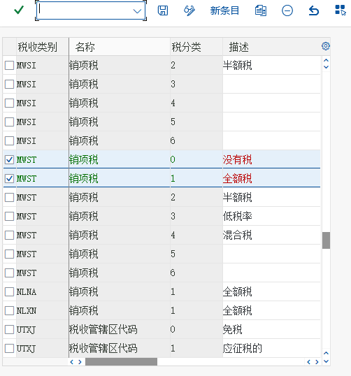
画面 1194image1206.png · 502×538
品目の勘定割当グループを定義
IMG設定（カスタマイズ）5 画面 / 5 ステップ原語（中国語）
销售和分销 → 基本功能 → 科目分配/成本 → 收入账户确定 → 检查科目分配的相关主数据-
解説： 受注伝票の請求時に、システムは請求書の会計伝票を自動的に生成します。そのうち売上高勘定は、システム上で品目や得意先などの要因によって決定できます。頤寧公司では、売上高勘定を品目によって「自製製品」と「商品（HAWA）」の 2 つの勘定に分けるだけで済みます。品目が売上高勘定を決定する作用は、品目マスタの「勘定割当グループ」によって実現されます。
販売管理（SD）－基本機能－勘定割当/原価－収益勘定決定－勘定割当関連マスタデータのチェック原文
解释：在销售订单开票时，系统会自动生成发票的会计凭证，其中销售收入科目在系统中可以由物料、客户等因素决定。颐宁公司对于销售收入科目只需要按物料分成 “ 自制产品” 和 “贸易商品” 两个科目。物料对销售收入科目的决定作用是通过物料主数据中的 “ 账户分配组”实现的。
销售和分销－基本功能－科目分配/成本－收入账户确定－检查科目分配的相关主数据
画面 1195image1207.png · 396×607 -
前の画面に続けて操作します（画面 1196）

画面 1196image1208.png · 568×137 -
「品目：勘定割当グループ」をダブルクリック
原文
双击物料：账户分配组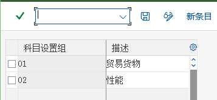
画面 1197image1209.png · 357×165 -
前の画面に続けて操作します（画面 1198）

画面 1198image1210.png · 332×147 教材ノートM2 商品（HAWA）-頤寧 -
M1 自製製品-頤寧
戻って、「得意先：勘定割当グループ」をダブルクリックします原文
M1 自制产品-颐宁
返回，双击“客户：科目分配组”
画面 1199image1211.png · 348×197
売上高の総勘定元帳勘定をメンテナンス
IMG設定（カスタマイズ）4 画面 / 3 ステップ原語（中国語）
销售和分销 → 基本功能 → 科目分配/成本 → 收入账户确定 → 分配总帐科目-
販売管理（SD）－基本機能－勘定割当/原価－収益勘定決定－総勘定元帳勘定の割当
原文
销售和分销－基本功能－科目分配/成本－收入账户确定－分配总帐科目
画面 1200image1212.png · 342×362 
画面 1201image1213.png · 653×261 -
売上高勘定はさまざまな要因の影響を受けますが、頤寧公司の場合は品目によって決まります。ダブルクリック「表 3 品目グループ/勘定キー」
原文
销售收入科目可能收到各种因素的影响，但颐宁公司的是由物料决定的。双击“表格 3 物料组/账户关键字”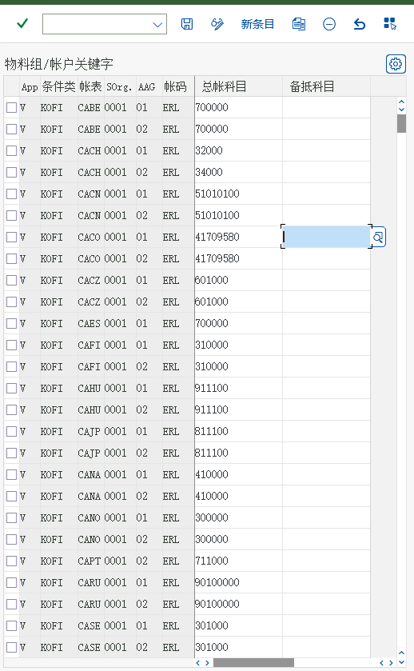
画面 1202image1214.png · 518×839 -
新規作成
原文
新建
画面 1203image1215.png · 492×231
| V KOFI | A999 | C999 | M1 ERL 51010101 |
| V KOFI | A999 | C999 | M2 ERL 51010101 |
| V KOFI | A999 | C999 | M1 ERS 51010101 |
| V KOFI | A999 | C999 | M2 ERS 51010101 |
販売伝票のヘッダレベルで更新グループを配賦します
IMG設定（カスタマイズ）12 画面 / 7 ステップ原語（中国語）
后勤常规 → 后勤信息系统 → 后勤数据仓库 → 更新 → 更新控制 → 设置：销售和分销 → 更新组 → 在抬头等级分配更新组-
ロジスティクス一般－ロジスティクス情報システム－ロジスティクスデータウェアハウス－更新－更新コントロール－設定：販売管理（SD）－更新グループ－ヘッダレベルで更新グループを割り当てる
原文
后勤常规－后勤信息系统－后勤数据仓库－更新－更新控制－设置：销售和分销－更新组－在抬头等级分配更新组
画面 1204image1216.png · 331×825 
画面 1205image1217.png · 380×662 -

画面 1206image1218.png · 608×465 -
解説： SAP ロジスティクスシステムには多くの分析ツールと分析レポートが含まれています。販売管理（SD）では、本ステップと次のステップで業務データからロジスティクス情報システムへの情報更新を有効化する必要があり、そうして初めてこれらのレポートにデータが含まれます。本ステップは販売伝票ヘッダの更新ルールで、販売エリア、得意先、販売伝票タイプによって決定されます。
解説：上の図は、ロジスティクス情報システムの更新が有効になっている販売伝票ヘッダの一覧です。「新規」をクリックします原文
解释：SAP 后勤系统包含了很多分析工具和分析报表，对于销售和分销我们需要在本步骤和下一个步骤中激活业务数据对后勤信息系统的信息更新，这样这些报表才会包含数据。本步骤是销售单据抬头的更新规则，是由销售范围、客户和销售单据类型来决定的。
解释：上图是所有已经激活更新后勤信息系统的销售凭证抬头的清单点击新建
画面 1207image1219.png · 646×241 -
その他のヘッダレベルの更新グループ配賦を設定します。
原文
设置其他抬头等级分配更新组。
画面 1208image1220.png · 657×231 -
前の画面に続けて操作します（画面 1209）
画面 1209image1221.png · 657×226 
画面 1210image1222.png · 641×224 -

画面 1211image1223.png · 643×224 -
前の画面に続けて操作します（画面 1212）


| C999 | Z1 | Z1 | 1 | 1 | SIS 更新: 受注伝票、納入通知、請求伝票 |
| C999 | Z1 | Z1 | 1 | 2 | SIS 更新: 返品、返品通知、貸方伝票 |
| C999 | Z1 | Z2 | 1 | 1 | SIS 更新: 受注伝票、納入通知、請求伝票 |
| C999 | Z1 | Z2 | 1 | 2 | SIS 更新: 返品、返品通知、貸方伝票 |
| C999 | Z2 | Z1 | 1 | 1 | SIS 更新: 受注伝票、納入通知、請求伝票 |
| C999 | Z2 | Z1 | 1 | 2 | SIS 更新: 返品、返品通知、貸方伝票 |
| C999 | Z2 | Z2 | 1 | 1 | SIS 更新: 受注伝票、納入通知、請求伝票 |
| C999 | Z2 | Z2 | 1 | 2 | SIS 更新: 返品、返品通知、貸方伝票 |
販売伝票の明細レベルで更新グループを配賦します
IMG設定（カスタマイズ）13 画面 / 4 ステップ原語（中国語）
后勤常规 → 后勤信息系统 → 后勤数据仓库 → 更新 → 更新控制 → 设置：销售和分销 → 更新组 → 在项目等级分配更新组-
ロジスティクス一般－ロジスティクス情報システム－ロジスティクスデータウェアハウス－更新－更新コントロール－設定：販売管理（SD）－更新グループ－明細レベルで更新グループを割り当てる
原文
后勤常规－后勤信息系统－后勤数据仓库－更新－更新控制－设置：销售和分销－更新组－在项目等级分配更新组
画面 1216image1230.png · 408×676 
画面 1217image1231.png · 291×769 
画面 1218image1232.png · 765×540 画面 1216image1230.png · 408×676 画面 1217image1231.png · 291×769 -
画面 1221image1233.png · 468×284 -
解説： SAP のロジスティクス情報システムには多くの分析ツールと分析レポートが含まれています。SD では、本ステップと前のステップで業務データからロジスティクス情報システムへの情報更新を有効化する必要があり、そうして初めてこれらのレポートにデータが含まれます。本ステップは販売伝票の明細レベルの更新ルールで、販売エリア、得意先、品目販売伝票タイプ、明細カテゴリによって決定されます。
解説：一覧には、ロジスティクス情報システムの更新が有効になっている販売伝票の明細レベルの一覧が表示されます。「新規エントリ」をクリックします原文
解释：SAP 后勤信息系统包含很多分析工具和分析报表。对于 SD，我们需要在本步骤和上步骤激活业务数据对后勤信息系统的信息更新，这些报表才会包含数据。本步骤是销售单据项目级别的更新规则，是由销售范围、客户、物料销售单据类型、行项目类别决定的。
解释：列表中是已经激活更新后勤信息系统的销售凭证行项目级别的清单，点击新条目 -
前の画面に続けて操作します（画面 1227）

画面 1227image1239.png · 657×284 画面 1228image1240.png · 658×291


| C999 | Z1 | Z1 | 1 | 1 | 1 | 1 | SIS 更新: 受注伝票、納入通知、請求伝票 |
| C999 | Z1 | Z1 | 1 | 1 | 2 | 2 | SIS 更新: 返品、返品通知、貸方伝票 |
| C999 | Z1 | Z2 | 1 | 1 | 1 | 1 | SIS 更新: 受注伝票、納入通知、請求伝票 |
| C999 | Z1 | Z2 | 1 | 1 | 2 | 2 | SIS 更新: 返品、返品通知、貸方伝票 |
| C999 | Z2 | Z1 | 1 | 1 | 1 | 1 | SIS 更新: 受注伝票、納入通知、請求伝票 |
| C999 | Z2 | Z1 | 1 | 1 | 2 | 2 | SIS 更新: 返品、返品通知、貸方伝票 |
| C999 | Z2 | Z2 | 1 | 1 | 1 | 1 | SIS 更新: 受注伝票、納入通知、請求伝票 |
| C999 | Z2 | Z2 | 1 | 1 | 2 | 2 | SIS 更新: 返品、返品通知、貸方伝票 |
パートナ決定を設定
IMG設定（カスタマイズ）5 画面 / 4 ステップ原語（中国語）
销售和分销 → 基本功能 → 合作伙伴确定 → 设置合作伙伴确定-
販売管理（SD）－基本機能－パートナ決定－パートナ決定の設定
原文
销售和分销－基本功能－合作伙伴确定－设置合作伙伴确定
画面 1229image1241.png · 291×638 -
解説： システムのパートナ決定は多くの要因に影響され、非常に柔軟です。今回は得意先マスタ関連の設定のみを追加し、その他はシステムで事前定義された内容を使用します。
原文
解释：系统中合作伙伴的确定受很多因素影响，也非常灵活，本次我们只增加客户主数据的相关配置，其他的使用系统预定义的内容。画面 1230image1242.png · 641×680 教材ノート「勘定グループ－機能割当」をダブルクリック -
「得意先マスタのパートナ確認の設定」をダブルクリックします
解説：得意先マスタに関連する設定も多くありますが、基本的には事前定義された内容を使用し、頤寧公司が新規に登録した得意先勘定グループの機能割当、つまり各得意先勘定グループがどのパートナ機能の役割を担えるかのみをメンテナンスします。原文
双击“设置客户主数据的合作伙伴确认”
解释：和客户主数据相关的配置也有很多，我们基本采用预定义的内容，只是维护颐宁公司新建的客户账户组的功能分配，即各客户账户组可以扮演什么合作伙伴功能角色。画面 1231image1243.png · 436×332 
画面 1232image1244.png · 663×819 -

画面 1233image1245.png · 678×280
| SP | 受注先 | K001 | 受注先-頤寧 |
| BP | 請求先 | K001 | 受注先-頤寧 |
| PY | 支払先 | K001 | 受注先-頤寧 |
| SH | 納入先 | K001 | 受注先-頤寧 |
| SH | 納入先 | K002 | 入庫先-頤寧 |
品目マスタの販売ビューをメンテナンス
業務処理（トランザクション）MM0110 画面 / 3 ステップ原語（中国語）
后勤 → 物料管理 → 物料主记录 → 物料 → 创建（一般） → MM01 立即-
解説： 頤寧公司の完成品「鋳鋼ポンプ 170－23」と商品（HAWA）「高速加圧ターボポンプ」は外部に販売されるため、これら 2 つの品目を使用する際には、両品目の品目マスタの販売ビューをメンテナンスする必要があります。
ロジスティクス－品目管理－品目マスタレコード－品目－登録（一般）－MM01 即時原文
解释：颐宁公司的产成品“铸钢泵 170－23”和贸易商品“高速增压涡轮泵”会对外销售，在使用这两个物料时需要维护这两种物料主数据的销售视图
后勤－物料管理－物料主记录－物料－创建（一般）－MM01 立即
画面 1234image1246.png · 252×428 -

画面 1235image1250.png · 471×330 
画面 1236image1251.png · 346×707 
画面 1237image1252.png · 543×329 
画面 1238image1253.png · 641×613 画面 1235image1250.png · 471×330 画面 1236image1251.png · 346×707 画面 1237image1252.png · 543×329 -
前の画面に続けて操作します（画面 1242）

画面 1242image1254.png · 633×591 画面 1243image1255.png · 660×562
品目の販売価格をメンテナンス
業務処理（トランザクション）VK115 画面 / 4 ステップ原語（中国語）
后勤 → 销售和分销 → 主数据 → 条件 → 按条件类型选择 → VK11 → 创建-
解説： これまでに販売価格の計算プロセスを定義しました。本ステップでは、実際に価格表をメンテナンスし、頤寧公司の「鋳鋼ポンプ 170－230」と「高速増圧ターボポンプ」の販売価格をメンテナンスします。SAP は価格決定手順の条件タイプに従ってメンテナンスし、本ステップでメンテナンスするのは条件タイプ PR00 の品目価格です。
ロジスティクス－販売管理（SD）－マスタデータ－条件－条件タイプ別選択－VK11－登録原文
解释：在前面，我们定义了销售价格的计算过程。在本步骤中，我们将实际维护价格表，为颐宁公司的“铸钢泵 170－230”和“高速增压涡轮泵”维护销售价格。SAP 是按照定价过程中的条件类型来维护的，本步骤维护的是条件类型 PR00 物料价格
后勤－销售和分销－主数据－条件－按条件类型选择－VK11－创建
画面 1244image1256.png · 313×379 -
PR00 は販売価格を表します
原文
PR00 代表销售价格
画面 1245image1257.png · 468×143 
画面 1246image1258.png · 501×221 原理の説明解説：システムが受注伝票の価格を価格表から検索するときは、一定の順序に従います。たとえば、まずこの得意先、この品目に対する専用価格を検索し、見つからなければこの品目をこの流通チャネル配下で用いる一般価格を使用する、といった具合です。この検索順序は「条件タイプのアクセス順序」と呼ばれます。「PR00」のアクセス順序は画面の 3 つのステップです。「承認ステータス付きの品目」を選択 -
前の画面に続けて操作します（画面 1247）
画面 1247image1259.png · 1147×317 -
階層見積がある場合は、品目をダブルクリックして階層価格設定に進みます
原文
如果有层级报价，双击物料进入层级定价
画面 1248image1260.png · 624×403
売上税率をメンテナンス
VK114 画面 / 3 ステップ原語（中国語）
后勤 → 销售和分销 → 主数据 → 条件 → 按条件类型选择 → VK11 → 创建-
解説： 売上税も受注伝票の価格設定プロセスで計算され、条件タイプは MWST です。これも価格の一種としてメンテナンスしますが、異なるのは税コードを通じて間接的に税率を求める点です。
原文
解释：销项税也是在销售订单定价过程中计算的，条件类型 MWST。着也是作为一种价格维护，所不同的是通过税码来间接得到税率的。
画面 1249image1261.png · 294×141 
画面 1250image1262.png · 501×221 -

画面 1251image1263.png · 1149×367 -
前の画面に続けて操作します（画面 1252）

画面 1252image1264.png · 781×556
受注先マスタの販売ビューをメンテナンスします
VD0113 画面 / 6 ステップ原語（中国語）
后勤 → 销售和分销 → 主数据 → 业务伙伴 → 客户 → 创建 → VD01-

画面 1253image1265.png · 522×572 
画面 1254image1266.png · 303×293 -
解説： K001 受注先－頤寧勘定グループの得意先は会計データのみ登録されており、販売ビューの業務処理は作成されていません
ロジスティクス－販売管理（SD）－マスタデータ－ビジネスパートナ－得意先－登録－VD01原文
解释：K001 订货方－颐宁账户组下的客户只创建了财务数据，没有建立销售视图前台
后勤－销售和分销－主数据－业务伙伴－客户－创建－VD01画面 1255image1267.png · 689×769 -
前の画面に続けて操作します（画面 1256）

画面 1256image1268.png · 621×704 
画面 1257image1269.png · 668×673 教材ノート出荷条件すなわち「輸送条件」は、品目およびプラントとともに納入の出発ポイントを決定します -

画面 1258image1270.png · 522×572 
画面 1259image1271.png · 868×423 -
勘定割当グループは、01 が国内売上です。得意先の勘定割当グループも売上高の総勘定元帳勘定の自動決定に影響しますが、6.29 の売上高の総勘定元帳勘定のメンテナンスでは、頤寧公司について品目により売上高の勘定を決定する設定のみをメンテナンスしました。
目、そのため得意先マスタではこのパラメータは機能しません原文
账户分配组，01 为国内收入。客户的账户分配组也可以影响自动确定销售收入的总帐科目，但是我们在6.29 维护销售收入的总帐科目中只维护了颐宁公司根据物料确定销售收入科
目，所以客户主数据中这个参数不起作用画面 1260image1272.png · 522×572

入庫先の販売ビューをメンテナンス
業務処理（トランザクション）VD016 画面 / 3 ステップ原語（中国語）
后勤 → 销售和分销 → 主数据 → 业务合作伙伴 → 客户 → 创建 VD01-
ロジスティクス－販売管理（SD）－マスタデータ－ビジネスパートナ－得意先－登録 VD01
原文
后勤－销售和分销－主数据－业务合作伙伴－客户－创建 VD01
画面 1266image1280.png · 522×572 
画面 1267image1281.png · 613×783 画面 1266image1280.png · 522×572 画面 1267image1281.png · 613×783 -
遠東造船三工場は遠東造船所の受注伝票の納入先にすぎないため、販売ページでメンテナンスする項目はほとんどありません。「送信」をクリックして、次に進みます
原文
远东造船三厂只是远东造船厂的销售订单的送达方，所以销售页面没什么要维护的。点击发送，进入
画面 1270image1282.png · 648×721 -
前の画面に続けて操作します（画面 1271）

画面 1271image1283.png · 661×514 教材ノート上記の方法を繰り返し、流通チャネル Z1、製品部門 Z2 のデータにも納入優先度 02、輸送条件 99、税 1 をメンテナンスします
入庫先を受注先に配賦
VD024 画面 / 4 ステップ原語（中国語）
后勤 → 销售和分销 → 主数据 → 业务合作伙伴 → 客户 → 更改 → VD02-
解説： 頤寧公司の得意先である遠東造船所の受注伝票では、入庫先がその支店である遠東造船所第三支店になる可能性があります。このような関係を扱うため、遠東造船所の得意先マスタで第三支店を「納入先」としてメンテナンスする必要があります。
ロジスティクス－販売管理（SD）－マスタデータ－ビジネスパートナ－得意先－変更－VD02原文
解释：颐宁公司的客户远东造船厂的销售订单，收货方还有可能是它的分公司远东造船厂第三分公司。要处理这样的关系，我们在远东造船厂的客户主数据中必须将第三分公司作为“ 送达方”维护
后勤－销售和分销－主数据－业务合作伙伴－客户－更改－VD02画面 1272image1284.png · 345×379 -
前の画面に続けて操作します（画面 1273）
画面 1273image1285.png · 515×383 -
「販売エリアデータ」をクリック
原文
点击销售区域数据
画面 1274image1286.png · 680×752 教材ノートパートナ機能に切り替え、SH 20000000 を追加 -
前の画面に続けて操作します（画面 1275）

画面 1275image1287.png · 698×439
見積を登録
VA219 画面 / 2 ステップ原語（中国語）
后勤 → 销售和分销 → 销售 → 报价 → VA21-创建-
解説： 遠東造船所から販売の引き合いがあり、頤寧の販売組織に鋳鋼ポンプ 170-230 を 30 個提示するよう求めています。本ステップで見積を行います
ロジスティクス－販売管理（SD）－販売－見積－VA21-登録原文
解释：远东造船厂有一个销售意向，要求颐宁销售组织提供 30 件铸钢泵 170-230，我们在本步骤来报价
后勤－销售和分销－销售－报价－VA21-创建画面 1276image1288.png · 664×309 -
前の画面に続けて操作します（画面 1277）

画面 1277image1289.jpeg · 1213×484 
画面 1278image1290.png · 154×15 
画面 1279image1293.png · 882×439 画面 1280image1294.png · 220×39 画面 1279image1293.png · 882×439 画面 1280image1294.png · 220×39 画面 1283image1295.png · 851×426 
画面 1284image1296.png · 168×15 教材ノート同じ方法で他の見積伝票を登録
受注伝票を登録
6 画面 / 5 ステップ原語（中国語）
后勤 → 销售和分销 → 销售 → 报价 → 后继功能 → V-01-订单-
ロジスティクス－販売管理（SD）－販売－見積－後続機能－V-01-受注伝票
原文
后勤－销售和分销－销售－报价－后继功能－V-01-订单画面 1285image1297.png · 338×409 
画面 1286image1298.png · 344×331 -
「参照ありで作成」をクリック
原文
点击有参照创建
画面 1287image1299.png · 550×599 教材ノート「コピー」をクリック -
前の画面に続けて操作します（画面 1288）

画面 1288image1300.png · 651×390 -
システムに利用可能在庫がないことが表示されます。「続行」をクリックします（MB1C で 501 の参照伝票なし入庫を行ってから、後続の操作を行うことをお勧めします）
原文
系统显示无可用库存，点击继续（建议通过MB1C 501无订单收货后再做后续的操作）
画面 1289image1301.png · 1147×619 -
前の画面に続けて操作します（画面 1290）

画面 1290image1302.png · 178×37 教材ノート同じ方法で 20000001、20000000 も参照して登録しました
出荷伝票（外向納入）を登録する
VL01N4 画面 / 3 ステップ原語（中国語）
后勤 → 销售和分销 → 装运和运输 → 外向交货 → 创建 → 单个凭证 → VL01N-
ロジスティクス－販売管理（SD）－出荷と輸送－出荷伝票（外向納入）－登録－個別伝票－VL01N
原文
后勤－销售和分销－装运和运输－外向交货－创建－单个凭证－VL01N
画面 1291image1303.png · 362×403 
画面 1292image1304.png · 449×395 教材ノート業務処理 -
ロジスティクス－販売管理（SD）－出荷と輸送－出荷伝票（外向納入）－変更－VL01N-個別伝票
原文
后勤－销售和分销－装运和运输－外向交货－更改－VL01N-单个凭证画面 1293image1305.png · 1151×426 -
前の画面に続けて操作します（画面 1294）

画面 1294image1306.png · 213×28
ピッキングと出庫転記（PGI）
請求伝票を登録
業務処理（トランザクション）VF013 画面 / 3 ステップ原語（中国語）
后勤 → 销售和分销 → 出具发票 → 出具发票凭证 → VF01-创建-
ロジスティクス－販売管理（SD）－請求－請求伝票－VF01-登録
原文
后勤－销售和分销－出具发票－出具发票凭证－VF01-创建
画面 1295image1307.png · 636×603 -
前の画面に続けて操作します（画面 1296）
画面 1296image1308.png · 937×312 -
「保存」をクリック
原文
点击保存画面 1297image1309.png · 188×33
請求書をリリース
VF023 画面 / 3 ステップ原語（中国語）
后勤 → 销售和分销 → 出具发票 → 出具发票凭证 → VF02-修改-
前のステップの販売請求伝票を財務会計の業務処理で転記します
ロジスティクス－販売管理（SD）－請求－請求伝票－VF02-変更原文
将上步的销售发票凭证过账到财务会计前台
后勤－销售和分销－出具发票－出具发票凭证－VF02-修改
画面 1298image1310.png · 643×376 -
小旗を押すと、画面下部に伝票が記帳へ転送された旨のメッセージが表示されます。「会計」をクリックします
原文
按小旗子，屏幕下方会提示凭证已经传送到记账，点击会计画面 1299image1311.png · 170×46 -
前の画面に続けて操作します（画面 1300）

画面 1300image1312.png · 375×356
「元伝票」をクリック
1 画面 / 1 ステップ原語（中国語）
-
前の画面に続けて操作します（画面 1301）

画面 1301image1313.png · 968×226
受注伝票明細一覧を照会
業務処理（トランザクション）VA052 画面 / 1 ステップ原語（中国語）
后勤 → 销售和分销 → 销售 → 信息系统 → 订单 → VA05-销售订单清单-
前の画面に続けて操作します（画面 1302）

画面 1302image1314.png · 638×400 
画面 1303image1315.png · 1706×325
販売分析
業務処理（トランザクション）MCTA4 画面 / 3 ステップ原語（中国語）
后勤 → 销售和分销 → 销售信息系统 → 标准分析 → MCTA-客户-
本ステップは 30 と 31 で事前に有効化し、得意先と品目マスタで統計グループをメンテナンスしておく必要があります。そうして初めて、これらの標準分析にデータが表示されます。
原文
本步骤需在 30 和 31 中事先激活，并在客户和物料主数据中维护统计组，这些标准分析才会有数据画面 1304image1316.png · 825×409 画面 1305image1317.png · 598×211 -
「変換明細」をクリック
原文
点击转换细分画面 1306image1318.png · 228×356 -

画面 1307image1319.png · 642×196
貸借対照表を実行
業務処理（トランザクション）FS00MIROCK11NCK24VL01NOBYC62 画面 / 24 ステップ解決方法：
問題：会社コード C999 の勘定 12010101 に対して売上税／仕入税関連の操作が許可されていないため、税コード J1 は無効です メッセージ番号 FS217
考え方：そこで、勘定コード 12010101 に対して売上税／仕入税関連の操作を許可することにします。実行：FS00 --- 総勘定元帳勘定 12010101 を入力し、管理データで税タイプとして「-」を選択します（仕入税のみ許可）。
原語（中国語）
解决方法：
问题：因为不允许对公司代码 C999 科目 12010101 进行销项/进项税相关操作，所以税码 J1 无效消息号FS217
思路：所以就同意科目代码12010101允许进行销项/进项贺岁相关操作。执行：FS00---输入总账科目12010101，在控制数据中，税务类型中选择： “-”代表只允许进项税。
会计 → 财务会计 → 总分类帐 → 信息系统 → 总帐报表 → 资产负债表/损益表/现金流 → 一般的| 項目（日本語） | 画面の中国語 | 教材の設定値 |
|---|---|---|
| ) SAP | ) SAP | NetWeaver |
-
会計－財務会計－総勘定元帳－情報システム－総勘定元帳レポート－貸借対照表／損益計算書／キャッシュフロー－一般
原文
会计－财务会计－总分类帐－信息系统－总帐报表－资产负债表/损益表/现金流－一般的
画面 1308image1320.png · 600×537 
画面 1309image1321.png · 1807×467 -

画面 1310image1322.png · 710×587 
画面 1311image1323.png · 476×390 -
パス：SPRO -> 財務会計（新）-> 財務会計のグローバル設定（新）-> 販売税／仕入税 -> 基本設定 -> 計算プログラムへの国の割当
原文
路径：SPRO -> 财务会计（新）-> 财务会计全局设置（新）-> 销售/购置税 -> 基本设置 -> 向计算程序分配国家画面 1312image1324.png · 298×372 つまずき注意原価センタに配賦しない／会計年度が有効化されていない場合の解決方法 -
前の画面に続けて操作します（画面 1313）
画面 1313image1325.png · 481×369 -
作業タイプが設定できない場合も、この方法で解決できます
原文
作业类型无法设置，也可以通过该办法解决
画面 1314image1341.jpeg · 1161×1756 画面 1315image1342.jpeg · 827×72 
画面 1316image1344.jpeg · 979×54 
画面 1317image1345.png · 819×153 
画面 1318image1346.jpeg · 136×51 
画面 1319image1347.jpeg · 150×122 
画面 1320image1348.jpeg · 122×27 画面 1321image1349.jpeg · 241×27 
画面 1322image1351.jpeg · 153×130 画面 1323image1352.jpeg · 357×34 画面 1324image1353.jpeg · 136×75 
画面 1325image1354.jpeg · 146×28 
画面 1326image1355.jpeg · 357×27 画面 1314image1341.jpeg · 1161×1756 画面 1315image1342.jpeg · 827×72 画面 1316image1344.jpeg · 979×54 画面 1317image1345.png · 819×153 画面 1318image1346.jpeg · 136×51 画面 1319image1347.jpeg · 150×122 画面 1320image1348.jpeg · 122×27 画面 1321image1349.jpeg · 241×27 画面 1322image1351.jpeg · 153×130 画面 1323image1352.jpeg · 357×34 画面 1324image1353.jpeg · 136×75 画面 1325image1354.jpeg · 146×28 画面 1326image1355.jpeg · 357×27 教材ノート��UI114 -
カスタマイズエラー：現行でない業務トランザクショングループ
原文
客户化错误：非当前业务交易组
画面 1340image1356.png · 466×248 -
前の画面に続けて操作します（画面 1341）
画面 1341image1357.png · 466×221 -
2 つ目は RK811XUP（すべてのクライアントに対して）ですが、現在は前者の代わりに RK811UPD を使用します
原文
其二RK811XUP（对所有的集团）目前用 RK811UPD 代替前者画面 1342image1358.png · 435×606 
画面 1343image1359.png · 487×383 教材ノート品目 R999-100 の必須勘定設定（勘定設定カテゴリを入力） -
CLIENT COPY が不完全であることが原因です。
se38 を実行し、2 つのプログラムのいずれかを実行してください。1 つは RK811XST（現在のクライアントのみ）、原文
是CLIENT COPY 不完整造成的，
请运行se38一下，执行两个程序中的一个：其一RK811XST(仅在当前的集团），画面 1344image1360.png · 1147×543 画面 1345image1361.png · 366×364 -
画面 1346image1362.png · 461×330 -
前の画面に続けて操作します（画面 1347）
画面 1347image1363.png · 613×202 
画面 1348image1364.png · 974×265 教材ノートエントリ A999 BSX CN01 の勘定を確定できません -
前の画面に続けて操作します（画面 1349）

画面 1349image1365.png · 1366×765 -

画面 1350image1367.png · 1155×1758 画面 1350image1367.png · 1155×1758 つまずき注意会社コード C999 の勘定 12010101 に対して売上税／仕入税関連の操作が許可されていないため、税コード J1 は無効です -
前の画面に続けて操作します（画面 1352）
画面 1352image1368.png · 1138×331 -
「+」は売上税のみを許可します。「*」はすべての税タイプを許可します。
その後、請求書の入力と支払が正常に行えます。注意：MIRO を終了して入り直してください！原文
“+”代表只允许销项税。 “*”代表允许所有的税类型。
然后就能正常入发票付款了。注意，退出MIRO 重新进入！
画面 1353image1369.jpeg · 995×836 教材ノート内部作業 LAB 1001 の価格を決定できません -
前の画面に続けて操作します（画面 1354）
画面 1354image1370.jpeg · 1485×855 -
CK11N では、次のように価格をメンテナンスすればよいです。
原文
通过CK11N要，按照如下方式维护价格，即可。
画面 1355image1371.png · 563×426 
画面 1356image1372.png · 937×251 -

画面 1357image1373.png · 1018×490 -
CK11N を終了し、その後 CK24 を再実行します
原文
退出CK11N，然后重新执行CK24画面 1358image1374.png · 981×306 つまずき注意品目 F999-100 は保管場所 P999 003 に存在しません -
前の画面に続けて操作します（画面 1359）

画面 1359image1375.png · 540×214 -
前の画面に続けて操作します（画面 1360）
-
前の画面に続けて操作します（画面 1365）
画面 1365image1381.png · 425×396 -
MB1C 501 で期首在庫を入力すると、VL01N で出荷伝票（外向納入）を作成できない問題を解決できます
原文
MB1C 501 录入期初库存，可以解决无法创建VL01N外向交货单的问题
画面 1366image1382.png · 629×647 
画面 1367image1383.png · 557×418 つまずき注意T-CODE OBYC で次のようにメンテナンスすると、この問題を解決できます -
前の画面に続けて操作します（画面 1368）

画面 1368image1384.png · 423×340 画面 1369image1385.jpeg · 867×633


{kind=link}
{kind=link}
{kind=link}
{kind=link}
{kind=link}
{kind=link}
{kind=link}
{kind=link}
{kind=link}
{kind=link}
{kind=link}
{kind=link}
{kind=link}
{kind=link}
{kind=link}
{kind=link}
{kind=link}
{kind=link}
{kind=link}
{kind=link}
{kind=link}
{kind=link}
{kind=link}
{kind=link}
{kind=link}
{kind=link}
{kind=link}
{kind=link}
{kind=link}
{kind=link}
{kind=link}
{kind=link}
{kind=link}
{kind=link}
{kind=link}
{kind=link}
{kind=link}
{kind=link}
{kind=link}
{kind=link}
{kind=link}
{kind=link}
{kind=link}
{kind=link}
{kind=link}
{kind=link}
{kind=link}
{kind=link}
{kind=link}
{kind=link}
{kind=link}
{kind=link}
{kind=link}
{kind=link}
{kind=link}
{kind=link}
{kind=link}
{kind=link}
{kind=link}
{kind=link}
{kind=link}
{kind=link}
{kind=link}
{kind=link}
{kind=link}
{kind=link}
{kind=link}
{kind=link}
{kind=link}
{kind=link}
{kind=link}
{kind=link}
{kind=link}
{kind=link}
{kind=link}
{kind=link}
{kind=link}
{kind=link}
{kind=link}
{kind=link}
{kind=link}
{kind=link}
{kind=link}
{kind=link}
{kind=link}
{kind=link}
{kind=link}
{kind=link}
{kind=link}
{kind=link}
{kind=link}
{kind=link}
{kind=link}
{kind=link}
v
カスタマイズエラー：現行でない業務トランザクショングループ
登録済みの購買発注をすべて削除してから、品目の会計ビュー 1 の「評価クラス」を変更します。たとえば、本書の原材料は 3000 です。なお、当期をメンテナンスすると同時に、前期および前年度の評価クラスもメンテナンスする必要があります。具体的なメンテナンス方法は下図のとおりです（品目を登録する際に、次の問題を解決しておくことを推奨します）：
MMSC メンテナンス
VL01N の【選択した日付までの納入で期限が到来していない計画行】の解決方法は、選択日付を受注伝票と一致させることです
4. スクリーンショットと設定値について
S4.docx の著者が実システムでキャプチャした中国語インターフェースの画面です（元のファイル名 imageNNN.png は各図の図注に残しているので、Word の原文と 1 枚ずつ照合できます）。当サイトはこれらの画面を一切描き直したり、シミュレーションで再現したりしていません。C999、会社名「頤寧機械有限公司」、プラント F999、品目 R999-100/T999-100/F999-100、得意先 K001/K002 など）はすべて原作者の教材環境のものです。手順どおりに作業するときは、操作の順序と設定ポイントはそのまま流用できますが、具体的な番号や名称はご自身のシステムの値に置き換えてください；ドキュメントと異なるメッセージが出た場合は、まず「トラブルシューティングと注意点」ページで原教材ドキュメントに記録された同種の問題を確認してください。